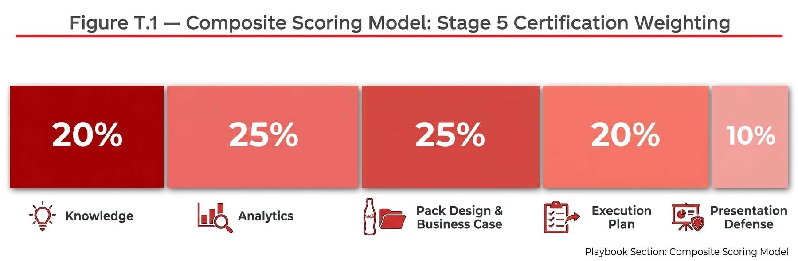

Chapter 11
Training Programme T1–T5: Five-Stage Certification Programme
The RGM Recruitment Pack Training and Certification Programme is a five-stage, role-differentiated capability journey covering the full analytical and commercial skill set required to design, deploy, and measure Recruitment and Affordability Pack initiatives across any Swire Coca-Cola market.

Playbook Chapter
Training Programme T1–T5: Five-Stage Certification Programme
Programme Overview
The RGM Recruitment Pack Training and Certification Programme is a five-stage, role-differentiated capability journey covering the full analytical and commercial skill set required to design, deploy, and measure Recruitment and Affordability Pack initiatives across any Swire Coca-Cola market.
Stage | Title | Target Audience | Assessment Type | Certification Level |
|---|---|---|---|---|
Stage 1 | Foundation | Associate / Analyst | MCQ (20 questions) + 1 mini case diagnosis | — |
Stage 2 | Market Diagnosis & Analytics | Manager / Senior Analyst | Data interpretation test (30 min) + written case analysis (45 min) | Foundation Certified (S1+S2) |
Stage 3 | Pack Design & Business Case | Senior Manager | Pack selection exercise + business case build | Practitioner Certified (S1–3) |
Stage 4 | Commercialization & Execution | RGM Lead | Launch plan design + 90-day action plan | — |
Stage 5 | Certification (End-to-End) | All levels (cumulative) | Written assessment + full market case + panel presentation | Advanced / Market Deployment Certified (S1–5) |
Composite Scoring Model
Component | Weight | What Is Tested |
|---|---|---|
Knowledge | 20% | Core definitions, framework concepts, key principles from all 4 stages (Ch.1–Ch.5) |
Analytics | 25% | Ability to diagnose a market from data: DDI, penetration, price-pack ladder, problem classification |
Pack Design & Business Case | 25% | Application of 6-dimension framework; business case construction; EPP and system economics |
Execution Plan | 20% | Launch readiness checklist; 5 non-negotiables; 90-day timeline; KPI architecture |
Presentation Defense | 10% | Communication clarity; recommendation quality; ability to defend under senior scrutiny |
STAGE 1 OF 5
Foundation
Audience: Associate / Analyst
Learning Objective
Build a shared language and baseline understanding of Recruitment and Affordability Packs, their strategic role within RGM and OBPPC, and the most common success and failure patterns.
Module | Topics Covered |
|---|---|
Module 1A: What Is a Recruitment Pack? What Is an Affordability Pack? | Definitions; critical distinctions between the two pack types; why the distinction matters for strategy, channel deployment, and measurement. The two-engine growth model (recruitment vs. retention). |
Module 1B: Why It Matters in RGM | Link to OBPPC and Price-Pack Architecture. Occasion-based portfolio design. Long-term revenue pool development logic. RGMX context: margin expansion alongside revenue growth. |
Module 1C: Success Factors and Failure Traps | The 8 Do / Do Not principles (Ch.1). Common misuses: treating small packs as a universal solution; measuring volume only; ignoring mix and cannibalization. Key questions senior leadership will ask. |
Assessment Parameter | Detail |
|---|---|
Format | Multiple choice (MCQ) — 20 questions + 1 mini case diagnosis |
Pass mark | 75% or above to proceed to Stage 2 |
Duration | 45 minutes |
Retake policy | One retake permitted after 2-week waiting period |
Stage 1 Sample Questions
Q1. Which of the following best describes the PRIMARY purpose of a Recruitment Pack?
A. To protect existing heavy buyers from trading down during inflationary periods
B. To acquire new or lapsed consumers by removing the trial barrier through price or portion
C. To drive frequency among existing light buyers by offering a larger pack at lower price per liter
D. To differentiate portfolio presentation between Modern Trade and General Trade channels
Correct Answer: B | Chapter: Ch.0 / Ch.1
A Recruitment Pack's primary purpose is consumer acquisition — removing the entry barrier (price or portion) for non-buyers and lapsed buyers. Option A describes an Affordability Pack. Option C describes a Frequency Pack mechanic. Option D describes OBPPC channel differentiation, which is a deployment decision, not a pack type definition.
Q2. The Affordability Index formula is defined as:
A. DDI ÷ Current Pack Price × 100
B. Current Pack Price ÷ Local Magic Price Point × 100
C. NSR per case ÷ GP per case × 100
D. Penetration Rate ÷ Category Average × 100
Correct Answer: B | Chapter: Ch.2 / Ch.8
Affordability Index = Current Entry Pack Price ÷ Local Magic Price Point × 100. An index above 110 signals meaningful affordability stress requiring intervention. This formula is used in Step 1 of the Market Diagnosis framework (Ch.2).
Q3. A market team identifies that category penetration is 65% but brand penetration is only 38%, with no price-sensitivity signal in consumer research. The most likely problem classification is:
A. Pack Problem — the wrong format is blocking recruitment
B. Execution Problem — distribution is insufficient
C. Brand Problem — consumers are buying the category but not the brand
D. Price Problem — the brand is priced above the affordability threshold
Correct Answer: C | Chapter: Ch.2
The gap between category penetration (65%) and brand penetration (38%) indicates consumers are in the category — they have purchasing power and category engagement — but choosing competing brands. The absence of a price-sensitivity signal rules out a Price Problem. A Brand Problem requires Marketing and equity investment, not a new pack.
Q4. Which of the following is a BLOCKING FACTOR in the 6-Dimension Evaluation Framework, regardless of total score?
A. A Consumer Fit score of 3 without conjoint validation
B. An Operational Fit score of 4 requiring moderate supply chain investment
C. Any single dimension scoring 1
D. An Economic Fit score below 4
Correct Answer: C | Chapter: Ch.3
Per the 6-Dimension scoring rules: any dimension scoring 1 is a blocking factor, regardless of total weighted score. A score of 1 indicates the pack cannot meet the minimum threshold on that dimension without fundamental redesign. The total score minimum of 20/30 applies in addition to this blocking factor rule.
Q5. The "Five Non-Negotiable Execution Conditions" for a Recruitment Pack launch are:
A. Right Outlet, Right Price, Right Visibility, Right Incentive, Right Replenishment
B. Right Brand, Right Pack, Right Channel, Right Consumer, Right Occasion
C. Right Distribution, Right POSM, Right Trade Investment, Right Timing, Right Message
D. Right Target, Right Metric, Right Timeline, Right Owner, Right Budget
Correct Answer: A | Chapter: Ch.4
The Five Non-Negotiables are: Right Outlet (numeric distribution target met), Right Price (RSP at EPP), Right Visibility (POSM placed correctly), Right Incentive (active from Day 1), Right Replenishment (no stockout tolerance in first 60 days). These are minimum conditions without which the pack cannot function as intended.
STAGE 2 OF 5
Market Diagnosis & Analytics
Audience: Manager / Senior Analyst
Learning Objective
Enable participants to independently assess whether a market has an affordability or recruitment gap, locate where the gap sits, and determine whether a pack intervention is the right response.
Module | Topics Covered |
|---|---|
Module 2A: Affordability Diagnosis | Market affordability context: income, inflation, purchasing power, price sensitivity. Category and brand participation: penetration, frequency, entry-point participation. Affordability Index methodology and benchmark interpretation. DDI benchmarks and Magic Price Points. |
Module 2B: Price Ladder & Competitive Mapping | Price-pack ladder mapping: identifying missing gaps. Consumer Entry Point (CEP) analysis. Competitive white space mapping and entry pack scan. The Price-Pack Ladder Mapping Template (T-02). |
Module 2C: Channel & Occasion Diagnosis | Channel-specific affordability mapping. Consumer mission and cash-in-hand analysis. Cannibalization risk assessment and net revenue/margin bridge. Opportunity heatmap methodology. |
Module 2D: Problem Classification | Brand problem vs. price problem vs. pack problem vs. execution problem. Go/No-Go decision criteria: when not to solve with a pack. The Go/No-Go Decision Tree (Ch.2). |
Assessment Parameter | Detail |
|---|---|
Format | Data interpretation test (30 min) + case-based written analysis (45 min) |
Pass mark | 70% combined weighted score |
Key skill tested | Correct identification of problem type and root cause from a market data set |
Retake policy | One retake permitted after 2-week waiting period |
Stage 2 Sample Questions
Q6. A market shows the following data: Category penetration 45%, Brand penetration 42%, brand entry-pack price index vs. DDI = 128, lapsed buyer rate +8% in the last 12 months. What is the most likely diagnosis?
A. Brand problem: brand penetration gap too large despite close category parity
B. Execution problem: distribution must be insufficient given high lapsed buyer rate
C. Price problem: pack price above DDI threshold is creating an affordability barrier
D. Pack problem: wrong format is driving consumers to lapse
Correct Answer: C | Chapter: Ch.2
Brand penetration (42%) is close to category penetration (45%) — there is no significant brand gap. The Affordability Index of 128 (>110 = intervention required) clearly signals that the entry pack price has drifted above the affordability threshold. The lapsed buyer rate increasing (+8%) is consistent with existing consumers exiting due to price pressure, not a new-buyer recruitment problem.
Q7. In a price-pack ladder mapping exercise, you identify a gap at the 3–4% DDI range with no own or competitive pack present. This gap is most likely to represent:
A. An opportunity to premiumize — insert a higher-price format to capture willing-to-pay consumers
B. An Entry Price Point (EPP) white space — potential recruitment pack opportunity at the Magic Price Point
C. A cannibalization risk — any pack inserted here would draw volume from adjacent packs
D. A distribution problem — the pack exists but is not reaching target outlets
Correct Answer: B | Chapter: Ch.2
A gap at the 3–4% DDI range where no pack exists from you or the competition is precisely the definition of an EPP white space — a potential recruitment opportunity. The absence of competitive occupancy makes this higher-priority (no competitive risk to moving first). Cannibalization and distribution are separate steps in the analysis.
Q8. Which of the following data sources is MOST appropriate for measuring household penetration growth as a result of a Recruitment Pack launch?
A. Nielsen Retail Measurement Service (RMS)
B. Distributor sell-in data
C. Kantar/Nielsen Household Panel data
D. Internal shipment data (cases dispatched)
Correct Answer: C | Chapter: Ch.2 / Ch.5
Household penetration requires household-level purchase data — which is only available from a household panel (e.g., Kantar WorldPanel or Nielsen Household Panel). Nielsen RMS measures store-level volume, not household purchase behavior. Distributor sell-in and internal shipments measure supply-chain movement, not consumer purchase.
STAGE 3 OF 5
Pack Design & Business Case
Audience: Senior Manager
Learning Objective
Develop the ability to design and evaluate pack options systematically, build a defensible business case, and present a recommendation that balances consumer, channel, brand, and economic requirements.
Module | Topics Covered |
|---|---|
Module 3A: Six-Dimension Evaluation Framework | Consumer fit, Occasion fit, Channel fit, Brand fit, Economic fit, Operational fit. Design sequence: start from target transaction price — not from the pack. Using the Evaluation Scorecard (T-03). |
Module 3B: Pack Selection Tools | Pack selection decision tree: entry barrier vs. repeat barrier. Price bridging methodology and optimal EPP identification. Volume-price elasticity: incrementality vs. substitution modelling. Pack evaluation scorecard (weighted, multi-criteria). |
Module 3C: Business Case Design | Expected recruitment and incrementality estimation. Margin impact and cannibalization assessment. Required trade investment, customer economics, break-even / payback. Using the Business Case Template (T-04). |
Assessment Parameter | Detail |
|---|---|
Format | Select best pack from structured options + build simplified business case |
Pass mark | Rubric-scored: 70% minimum across all criteria |
Key skill tested | Structured recommendation logic and economic defensibility |
Retake policy | One retake permitted after 2-week waiting period |
Stage 3 Sample Questions
Q9. The pack design principle "start from the target transaction price, not from the pack" means:
A. Always design the smallest possible pack regardless of consumer research
B. Establish the Entry Price Point (EPP) first based on DDI and Magic Price Point, then determine the optimal format and size that delivers the right experience at that price
C. Set the RSP equal to the DDI benchmark percentage before designing the pack format
D. Price the pack 10% below the nearest competitive entry pack regardless of consumer research
Correct Answer: B | Chapter: Ch.3
The design sequence starts with EPP determination (DDI benchmark + Magic Price Point + competitive context), then works backward to identify which pack format and size can deliver the right consumer experience at that price while meeting margin thresholds. Starting from an existing pack and applying a price reduction is a common error that generates affordability without genuine entry-point innovation.
Q10. A pack scores 4/5 on Consumer Fit, 4/5 on Channel Fit, 4/5 on Brand Fit, but 1/5 on Economic Fit because the GP% is below the market threshold. What is the correct action?
A. Proceed: the total score of 17/25 exceeds the 20/30 minimum when weighted
B. Block: Economic Fit score of 1 is a blocking factor regardless of total score; redesign required
C. Approve with a monitoring condition on margin performance
D. Escalate to the Regional RGM Lead for a final decision
Correct Answer: B | Chapter: Ch.3
Any dimension scoring 1 is a blocking factor, regardless of total weighted score or other dimension performance. A GP% below the market threshold means the pack does not meet the minimum economic viability standard. The correct action is to redesign — either by adjusting the pack format to reduce production cost, revising the EPP, or adjusting the value chain economics before resubmitting.
STAGE 4 OF 5
Commercialization & Execution
Audience: RGM Lead
Learning Objective
Translate a pack decision into a market-ready launch plan — from pre-launch readiness through sell-in to sell-out, with clear KPI ownership and a structured optimization process.
Module | Topics Covered |
|---|---|
Module 4A: Pre-Launch Readiness | Target channel prioritization and RTM readiness assessment. Supply, S&OP, pricing architecture, and commercial policy alignment. Customer proposition and sell-in story development. The Pre-Launch Readiness Checklist (T-05). |
Module 4B: Launch Design & Execution Standards | Outlet segmentation and numeric distribution targets. Five non-negotiables: right outlet, price, visibility, incentive, replenishment. POSM requirements, trial mechanics, and perfect store standards. |
Module 4C: Sell-In to Sell-Out Closed Loop | Distributor briefing and sales toolkit deployment. Outlet compliance tracking and early-read monitoring. Rapid issue escalation and corrective action protocols. |
Module 4D: KPI Tracking & Optimization | Leading / Mid-term / Lagging KPI architecture. Incrementality judgment: recruitment vs. cannibalization vs. redistribution. Pilot-to-scale optimization loop. Scale/Fix/Exit decision rules and triggers. |
Assessment Parameter | Detail |
|---|---|
Format | Launch plan design (structured template) + 90-day action plan |
Pass mark | Panel-scored rubric: 70% minimum |
Key skill tested | Execution completeness, channel specificity, KPI clarity |
Retake policy | One retake permitted after 2-week waiting period |
Stage 4 Sample Questions
Q11. A pack has launched 30 days ago. Numeric distribution is 75% (target: 80%). EPP compliance is 92%. POSM compliance is 88%. Stockout rate is 3%. Repeat purchase rate among trial buyers is 22%. What is the correct 30-day action?
A. Exit: the pack is not meeting numeric distribution target and should be de-listed
B. Scale immediately: all other KPIs are on track or above target
C. Fix: close the 5pp ND gap in targeted Tier 1 outlets while maintaining current momentum on other metrics
D. Hold: wait until 60-day review before taking any action
Correct Answer: C | Chapter: Ch.4 / Ch.5
ND at 75% vs. 80% target is a single specific gap — and all other metrics are on or above target (EPP 92%≥85%, POSM 88%≥80%, stockout 3%<5%, repeat 22%≥20%). This is a Fix situation for one specific metric, not an Exit. The correct action is targeted: close the 5pp ND gap in specific outlets where coverage is missing. Scaling or holding without addressing the gap risks under-delivering on the volume target.
Q12. Which of the following is the correct "Scale / Fix / Exit" trigger at the 90-day review?
A. SCALE if volume is ≥50% of business case target and any two of the five non-negotiables are met
B. FIX if volume is 50–80% of target and one or two specific execution failure modes are identified
C. EXIT if volume is <80% of target regardless of the reason
D. SCALE if NSR per case is above forecast even if volume is below target
Correct Answer: B | Chapter: Ch.5
FIX is triggered when volume is 50–80% of target AND there are specific, identifiable failure modes — meaning the problem is diagnostic and fixable within 30 days. SCALE requires ≥80% of volume target PLUS all other thresholds met. EXIT requires <50% after a Fix cycle has been attempted, OR cannibalization/margin threshold breach. Option C is incorrect: volume at 70% of target with an identifiable fix is not an Exit.
STAGE 5 OF 5
Certification — End-to-End Assessment
Audience: All levels (cumulative)
Learning Objective
Confirm that the participant can operate end-to-end: diagnose a market, design the right pack, build a business case, plan the launch, and defend their recommendation under senior scrutiny.
Component | Description | Duration |
|---|---|---|
Component A: Written Assessment | Theory, analytical logic, and commercial judgment. Covers content from all four stages. 20 MCQ + 4 data interpretation questions. | 60 minutes |
Component B: Full Market Case | Participants receive a realistic market scenario (new brief per cohort). Required deliverables: market diagnosis, pack recommendation, business case, launch plan, KPI plan. Maximum 10 pages. | 5 business days preparation |
Component C: Panel Presentation & Defense | 10–15 minute presentation to a minimum 2-person senior panel (Regional RGM + one additional senior reviewer). Followed by 10 minutes challenge questions. | 25 minutes total |
Assessment Parameter | Detail |
|---|---|
Composite scoring | 20% Knowledge | 25% Analytics | 25% Pack Design & Business Case | 20% Execution Plan | 10% Presentation Defense |
Pass mark | 70% composite score; no single component below 55% |
Certification awarded | Within 2 weeks of panel review completion |
Failed certification | Full retake required after minimum 3-month interval |